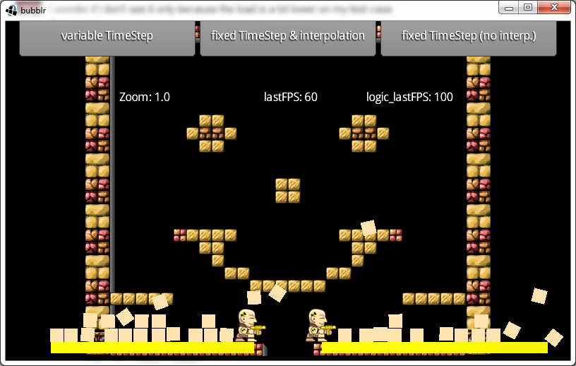

Mar 11, 2014 · 4 minute read · Comments
Games development
Fix your Timestep is a fantastic article by Glenn Fiedler that explains the different ways to tick a physics simulation. Show some self-respect, go read it and check some of his other articles on physics and network code. Some might be 8 years old but still totally relevant.
Essentially, it covers different approaches to pick a delta value to pass through to the physics engine along their strengths and weaknesses. The topic is complex but has an undeniable impact on games’ behaviour.
I thought it would be a good idea to show how it translates to a Libgdx application using the Box2D physics engine. Note that it also applies to Bullet, changes would be minimal.
Simple but wrong approaches
It starts with a fix time step of 1/60th of a second, which makes for a stable simulation but fails terribly when the game runs at less than 60fps, a very common situation in mobile devices.
The logical upgrade is to pass exactly how much time has passed since the last frame. Obviously, not every frame takes the same, which means the simulation could be unstable. Moreover, it will vary across devices as they can feature a wide range of specifications. This is definitely not the way to go.
Everything is lost!
Fixed timestep
If only we had the best of both worlds! A fixed timestep and a mechanism that caters for the render loop being too slow. As the article explains, the physics will always be stepped by a fixed amount, let’s say 1/60s. Some machines may be too fast and render at 120fps, so we can run the physics twice. However, others might be too slow and render at 30fps, in which case we’d only step the physics one every two frames.
What happens when the game runs at 50fps?
We need an accumulator where we can put the time spent by the renderer. Then we step the physics by a fixed amount until they sync as best as possible. There might be still be some time left, but we can save it for the next frame.
public class SionGame extends ApplicationListener {
private World world;
private double accumulator;
private double currentTime;
private float step = 1.0f / 60.0f;
public void render() {
double newTime = TimeUtils.millis() / 1000.0;
double frameTime = Math.min(newTime - currentTime, 0.25);
float deltaTime = (float)frameTime;
currentTime = newTime;
while (accumulator >= step) {
world.step(step, velIterations, posIterations);
accumulator -= step;
}
}
Fixed timestep with interpolation
The accumulator <= step condition in the while loop means we can still have some time left in the accumulator but not enough to step the physics at 1/60s. This results in some visual stuttering, as the physics can get slightly out of sync for a while. Glenn Fiedler’s suggests we interpolate our entities’ transforms between the previous and current physics state based on how much time left is in the accumulator.
public class SionGame extends ApplicationListener {
private World world;
private double accumulator;
private double currentTime;
private float step = 1.0f / 60.0f;
public void render() {
double newTime = TimeUtils.millis() / 1000.0;
double frameTime = Math.min(newTime - currentTime, 0.25);
float deltaTime = (float)frameTime;
currentTime = newTime;
while (accumulator >= step) {
world.step(step, velIterations, posIterations);
accumulator -= step;
entityManager.update();
}
entityManager.interpolate(accumulator / step);
}
I entirely made EntityManager up, it simply should maintain a collection of your game entities. We assume entityManager.update() iterates over the list of game entities and updates their position and rotation according to the current physics state. On the other hand, entityManager.interpolate() should do something like the following.
public void interpolate(float alpha) {
for (Entity entity : entities) {
Transform transform = entity.getBody().getTransform();
Vector2 bodyPosition = transform.getPosition();
Vector2 position = entity.getPosition();
float angle = entity.getAngle();
float bodyAngle = transform.getRotation();
position.x = bodyPosition.x * alpha + position.x * (1.0f - alpha);
position.y = bodyPosition.y * alpha + position.x * (1.0f - alpha);
entity.setAngle(bodyAngle * alpha + angle * (1.0f - alpha));
}
}
Although it’s been simplified for the purpose of this text, the following snippet comes from SionCore.
A working sample
Libgdx community memeber, Just4phil, pointed out in the comments the advantages of using a fixed timestep with interpolation. He kindly provided a working sample that lets you switch between all approaches explained in this article. Not only that, he also linked to the source, which is really awesome. Kudos.

Again, read the original article if you haven’t done so already.
Mar 10, 2014 · 2 minute read · Comments
Games development
Today I created a repository on Gihub to keep track of my code base and I named it SionCore. This wasn’t made overnight, it’s the result of several small game projects, such as game jam gigs and Math Maze.
Slowly, it became obvious that some components were highly reusable and game agnostic. That is why I thought it would be good to make it public.
Who knows, maybe someday someone might even contribute!
This small game engine is built on top of Libgdx and Ashley among others and it’s compatible with desktop, Android and iOS platforms.
Disclaimer
SionCore is currently under heavy development, so expect constant API changes and a good deal of instability. Hopefully this one will last longer than my poorly executed previous attempts and will stabilise in a while. If that’s what floats your boat, you’re more than welcome on board.
Regardless of whether you use the whole thing or grab specific ideas, feedback is more than welcome.
Features
Currently implemented and working.
- Data driven entities
- Entity components and system collection: rendering, animation, physics.
- Localisation with automatic generation of template CSV files.
- Easy screen management
- Config files
- Data driven sprites
- Data driven physics
- Grouped asset management
- Basic state machine implementation
- Populate your Box2D world from map data
- Spine integration
- Multiple aspect ratio support
Dependencies
As of now, all the .jar files SionCore needs are included in the repository. However, switching to Gradle or Maven is something I want to get out of the way sooner rather than later.
Contributing
If you find a bug or would like a particular feature, please open an issue. On the other hand, if you want to get more involved, clone the repository and open a pull request!
Mar 10, 2014 · 1 minute read · Comments
Computing
Many Java projects use Ant to automate their build process. Libgdx, for instance, is among them. One could possibly say Ant is the Java version of Make. Targets, dependencies and other settings are defined in XML scripts.
Downloading dependencies while your machine is behind a proxy might prove problematic. Luckily enough, you can specify your proxy settings inside the Ant script.
<setproxy proxyhost="host" proxyport="port" proxypassword="password"/>
Users behind a proxy would now be able to download dependencies with Ant. More documentation about the setproxy task is available inside the official user manual.
This comes from me trying to get the Libgdx development environment in my office’s desktop. We obviously have a proxy, which put this little bump on the road.
Mar 9, 2014 · 1 minute read · Comments
General
Let’s face it, the old theme was extremely 2005. It was about time this blog got a proper facelift.
Since I’m no designer, I put together all my creativity and went for one of the featured WordPress themes, Twenty Thirteen. But that’s okay because the awesomeness of my content makes up for the lack of innovation.
Ha!
Now seriously, I thought a colorful and yet simple style would do this place some good. Twenty Thirteen is modern, slick and clean. The mobile version works really well too! It might not be the most glorious display of originality but I like it and that’s all that really matters. Of course, I hope whoever reads this doesn’t find it too unpleasant.
For a while, I even considered divorcing WordPress entirely and go for something more minimalistic such as Jekyll or Ghost. However, when I looked into the actual setup, I decided I couldn’t be bothered. Simplicity is beautiful and WordPress is kind of a Behemoth. A monster that works and makes my life easy, nonetheless.
Feb 9, 2014 · 5 minute read · Comments
Computing
Needless to say, C++ is a glorious language. Sadly, the attention it gets on the blog is far from representative of my appreciation towards it. Despite it being my main language at work, I only tend to talk about Libgdx side projects around here. Well, enough is enough!
Truth be told, over the years, standard after standard, C++ has become a behemoth of a language. As Scott Meyers likes to say, it’s actually a set of languages.
- C with classes.
- C with classes and the STL.
- All of the above and templates.
One of the beauties of C++ is that I can always learn something new about it, which almost makes up for its ever growing syntax complexity.
Let’s talk macros
Let’s talk about macros. Everyone knows about the preprocessor and the basic usage of macros, right?
#define PI 3.14
#define SQR(x) x * x
Actually, let’s talk about macros that take other macros as arguments.
Sorry what?
The problem
Let us imagine we define the following perfectly standard enum to represent kinds of animals in a farm.
enum Animal
{
eAnimal_Dog,
eAnimal_Cat,
eAnimal_Cow,
eAnimal_Count,
};
Our application can request a server a list of animals a given farm has. The server sends the animal names as strings, so we need to convert them to enum values. Alright, let’s define a function to do that.
Animal getAnimalFromString(const char* str)
{
if (!strcmp(str, "Dog")) return eAnimal_Dog;
if (!strcmp(str, "Cat")) return eAnimal_Cat;
if (!strcmp(str, "Cow")) return eAnimal_Cow;
return eAnimal_Count;
}
Err… That is not the most elegant piece of code you’ve ever seen, is it? We also might have to convert from an enum value to a string literal in case we want to send a report back to the server.
const char* getStringFromAnimal(Animal animal)
{
switch (animal)
{
case eAnimal_Dog: return "Dog";
case eAnimal_Cat: return "Cat";
case eAnimal_Cow: return "Cow";
default: return "None";
}
}
That was horrendous enough, but just the thought of adding new species to the catalogue makes me shiver badly. Why not simply use strings to represent animal species? Enums are nice because they heavily reduce the domain of values a variable can have and prevent us from making silly typos everywhere.
There must be a better solution.
Higher order macros
To make things nicer, we’d need some sort of compile time mechanism that traverses the list of enum values generating the time consuming boilerplate code for us.
The preprocessor!
Take a look at this way of defining our list of animals.
#define ANIMAL_LIST(m) \
m(Animal, Dog) \
m(Animal, Cat) \
m(Animal, Cow)
_ANIMAL_LIST_ is a higher order macro that takes a macro m as a parameter. Then it passes each one of our animal species to m.
The previous macro is not really useful by itself. Let’s make things slightly more interesting
#define SMARTENUM_VALUE(typeName, value) e##typeName##_##value,
#define SMARTENUM_DEFINE_ENUM(typeName, values) enum typeName { values(SMARTENUM_VALUE) e##typeName##_Count, };
SMARTENUM_DEFINE_ENUM takes the enum name and the list of values as parameters and defines an enum for us. It also appends the total count.
Note: ## is used by the preprocessor to concatenate parameters with other pieces of text.
When we write
SMARTENUM_DEFINE_ENUM(Animal, ANIMAL_LIST)
The preprocessor expands it to
enum Animal { eAnimal_Dog, eAnimal_Cat, eAnimal_Cow, eAnimal_Count };
Okay, that was a lot of gibber jabber for very little gain.
Hang on a minute, we can go further. Let’s write a small mechanism to convert an enum value to a string literal.
#define SMARTENUM_STRING(typeName, value) #value,
#define SMARTENUM_DEFINE_NAMES(typeName, values) const char* typeName##Array [] = { values(SMARTENUM_STRING) };
#define getStringFromEnumValue(typeName, value) typeName##Array[##value]
SMARTENUM_DEFINE_NAMES takes an enum type and the list of values and generates an array with the string representations of our list values. Interestingly enough, the values in the array map directly to those of the enum. This allows us to write the third macro, which accesses the array at the right position to return the corresponding string literal for a given enum value.
Note: # is used by the preprocessor to convert a piece of text in a string literal.
When we write
SMARTENUM_DEFINE_NAMES(Animal, ANIMAL_LIST)
The preprocessor expands it to
const char* AnimalArray [] = { "Dog", "Cat", "Cow"}
So
const char* animalName = getStringFromEnumValue(Animal, eAnimal_Cow);
Will result in
const char* animalName = "Cow";
Aha!
Getting an enum value from a string literal is slightly trickier but still achievable. We’ve come this far, so it’d be a shame not to finish the job.
#define SMARTENUM_DEFINE_GET_VALUE_FROM_STRING(typeName, name) \
typeName get##typeName##FromString(const char* str) \
{ \
for (int i = 0; i < e##typeName##_Count; ++i) \
if (!strcmp(##typeName##Array[i], str)) \
return (##typeName##)i; \
return e##typeName##_Count; \
}
#define getEnumValueFromString(typeName, name) get##typeName##FromString(##name)
The first abomination generates a function that iterates over the previously defined array of names doing string comparisons until it finds the desired enum value. The second one is nothing more than a convenience macro to spare the user from remembering the preprocessor generated function name.
Now if we do
SMARTENUM_DEFINE_GET_VALUE_FROM_STRING(Animal, ANIMAL_LIST)
We can simply go
Animal animal = getEnumValueFromString(Animal, animalname);
Neat, isn’t it?
For future references
Now, every time we want to define an enum type that we need to convert to and from strings we’ll be lucky to be able to do the following.
#define CAR_LIST(m) \
m(Car, Fiat) \
m(Car, Ford) \
m(Car, Audi)
SMARTENUM_DEFINE_ENUM(Car, CAR_LIST)
SMARTENUM_DEFINE_NAMES(Car, CAR_LIST)
SMARTENUM_DEFINE_GET_VALUE_FROM_STRING(Car, CAR_LIST)
Voilà!
Admittedly, using macros like this doesn’t make for readable code and sometimes results in debugging complications. However, I’ve been able to debug my code normally in Visual Studio 2012 when using similar macros.
String conversion of enums is just the tip of the iceberg, this approach can be used to generate all sorts of repetitive boilerplate code.
Download it
In case you are interested, SmartEnums.h is available as a GitHub gist.
Note: this post was inspired by the article Higher Order Macros in C++